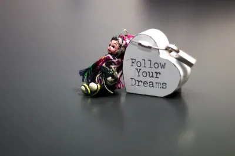

Ideas · · 9 min read
Sleep Science
Sleep matters, and the sleep-influencer economy inflates certainty far past the evidence. What's solid, what's oversold, and why tracking sleep can ruin it.
Photograph © Ken Reid
Sleep Science
I've always had a strange relationship with sleep. I used to experience a lot of insomnia due to my thanatophobia, but nowadays (largely due to changes in life circumstances and being much happier) I tend to sleep soundly. However, I made the (mistake?) decision to read "Why We Sleep: Unlocking the Power of Sleep and Dreams" by Matthew Walker. Now, I have something of an obsession with making sure I have as good a sleep routine as possible.
In a 2024 paper, Windred and colleagues took more than 10 million hours of accelerometer data from 60,977 people in the UK Biobank and found that how regular someone's sleep was predicted their risk of dying over the following years better than how long they slept[1]. People are obsessed with sleeping pills, mattresses and spending insane amounts of money and time on these, when there are many much simpler (and healthier) solutions backed by actual science - and you can tell it's not some grift because no one is making money off of it (unlike the pills and mattresses).
I have the same problem with the 'sleep influencers' on YouTube shorts, Instagram reels and TikToks that I have with most self-help books. Their whole business is telling you that you're doing sleep wrong and dying faster because of it, and some of that is built on good science, but is driven by a will to make money off of you, through selling books, sleep accessories, diet plans or 1 on 1 mentoring for some obscene costs.
Quick jargon guide
- Sleep hygiene: the set of habits and conditions that support sleep: consistent timing, dark, cool, no screens, etc.
- Circadian rhythm: your body's roughly 24-hour internal clock, set largely by light exposure.
- Sleep architecture: the structure of a night's sleep in stages (light, deep, REM) cycling through the night.
- Polysomnography: the overnight sleep study done in a clinic, with sensors on your head and body, that trackers are compared against.
- Orthosomnia: a coined term for anxiety about achieving "perfect" sleep, often triggered by trackers, that itself wrecks your sleep.
- Sleep apnea: a serious disorder where breathing repeatedly stops during sleep. Underdiagnosed, and the one thing on this list to actually worry about.
What actually works
The core of the science is solid, and fairly simple. Sleep is when a lot of important biology happens, memory consolidation for one and, going by more recent work, the brain clearing out metabolic waste. Chronic short sleep goes with worse heart health, worse mood, worse thinking and more accidents, and it keeps showing up that way study after study. The thing that really sold "better sleep" to me is that I've been working on my physical health and wellbeing, hitting the gym a lot - and it turns out good sleep is essential to maximize the gains you reap at the gym. What's the point in putting in all the effort to learn how to play guitar, or memorize content for class, or exhaust yourself at the gym, only to throw away a % of the gains from these things by sleeping poorly? So, here is some high level information I found backed by the science:
- Regular times. Going to bed and waking at the same times every day is one of the best-supported habits there is, and in the Windred study it predicted the risk of dying better than total hours did.
- Light. Bright light in the morning and dim evenings do more for your body clock than most gadgets.
- Apnea. If you snore heavily, wake up unrefreshed, or someone has noticed you stop breathing in your sleep, get assessed. Untreated apnea is a real cardiovascular risk, and getting checked for it is covered by most health insurances (from what I've read: I am not your insurance specialist!)

Oversold
Matthew Walker's Why We Sleep did a lot of good for how seriously people take sleep. It changed my habits more than any other book I've read, and I gave it five stars (which is not particularly rare for me but still). Alexey Guzey went through it and argues that the World Health Organization "sleep loss epidemic" in it doesn't exist (he couldn't find a WHO document declaring one), and that a bar chart on sports injuries, adapted from another study, lost its 5-hour column, the one showing fewer injuries than 6 hours[2], so some of it is fairly called out, but the central argument very much survives: sleep matters and most of us don't get enough of it.
Tracker "sleep scores" are largely guesswork. A consumer ring or watch estimates your sleep stages from movement and heart rate. These devices are bad at telling light, deep and REM sleep apart compared with polysomnography, and the app still shows you a confident number every morning. It runs largely guess work and validation.
Most sleep supplements have little behind them except marketing. Even melatonin, which does have real uses for shifting your body clock, is routinely sold at doses far higher than the evidence supports and taken as a sedative, which it isn't. In fact, the aforementioned book specifies that melatonin is a wonder-drug - for changing your sleep cycle when traveling - only. It's not intended for, nor good at, aiding people with sleep when they're not changing time zones. If you take it otherwise and find it useful, that's great, but it's likely as useful as a sugar pill, but with potential side effects. Think on it and settle for some of the other tips in this page.
Orthosomnia
Baron and colleagues described orthosomnia in 2017: patients so anxious about getting their tracker's numbers right that the anxiety itself was damaging their sleep[3]. You lie awake worrying about whether you're getting enough deep sleep. Or you wake up feeling fine, check the app, find out you "slept badly", and feel worse all day than you would have if you'd never looked.
What to do
You don't need to buy anything to sleep well. Roughly in order of how much they help:
- Routine. Go to bed and get up at the same times every day, weekends included (I know, that's a hard ask). In the Windred study, regularity predicted the risk of dying better than total hours did[1].
- Light. Get daylight in the morning, ideally outside, and keep the evenings dim. Light is the main thing that sets your body clock, and a bright screen at midnight tells it it's still daytime.
- Caffeine. It lasts much longer than it feels like it does. In healthy adults its half-life is between 3 and 7 hours[5], so half of a 3pm coffee can still be in you at 9pm, and a quarter at bedtime. Drake and colleagues gave people 400mg (two or three big coffees) six hours before bed and it still cut their sleep by more than an hour[4]. If you drink it at all, drink it in the morning (after all, caffeine is actually great for you cognitively and physically[9][10], hence the culture around it being a key ingredient in preworkouts, energy drinks and synonymous with studying!).
- Temperature. Keep the bedroom cool. Under a duvet, being too warm costs more deep and REM sleep than being cold does, and humid heat is worse again[6].
- Exercise. Regular exercise has a moderate effect on how well people say they sleep, and small effects on how long they sleep and how fast they drop off[7]. It's good for everything else too.
- Hydration. Drink enough through the day, but not a pint right before bed unless you enjoy 3am trips to the toilet. People who slept six hours were more likely to be under-hydrated than people who slept eight[8].
Everything past that (the scores, the supplements, the doom, the optimising) ranges from "might help" to overthinking and anxiety provoking. Unless your doctor says otherwise.
One major tip that I think lies overarching most of these but isn't directly stated so far: stress will keep you up. There isn't a single pill to fixing stress, but these other things can help regardless, and whether you need to lower your ambition, worry less about things not in your control (therapy? meditation? prayer? journal keeping?) or change your personal circumstances to less stressful ones (new job? cut off that toxic person? move to somewhere warmer or more beautiful?), lowering your stress is also wonderful for your sleep habits, your mental health, and your physical health - even if it's easier said than done.
Common questions
Do I really need eight hours?
"Eight hours" is a population average, not a prescription for you. Adult sleep need varies, most people land somewhere in a 7-to-9-hour band, and a rare few are true short sleepers. Aim for routine over number of hours, and once you have that down, aim for the 7-9 band.
Should I throw out my sleep tracker, then?
Not necessarily, but use it as a rough trend line rather than a true signal of sleep quality or amount of sleep.
Is it true that lost sleep can never be recovered?
Somewhat. Chronic, long-term sleep deprivation does carry real cumulative risks, and you can't "bank" or "repay" sleep like money. But the harder claims (that one bad night causes permanent damage, or that catch-up sleep does nothing) go past the evidence. A rough night is survivable and normal, recovery sleep does help, and lying there convinced you've done irreversible harm is both wrong and terrible for tonight's sleep.
References
- Windred, D. P., et al. (2024). Sleep regularity is a stronger predictor of mortality risk than sleep duration. Sleep, 47(1), zsad253. https://doi.org/10.1093/sleep/zsad253
- Guzey, A. (2019/2022). Matthew Walker's "Why We Sleep" is riddled with scientific and factual errors. https://guzey.com/books/why-we-sleep/ (a critique; treat as a starting point, not a final word, and read the exchanges it prompted)
- Baron, K. G., Abbott, S., Jao, N., Manalo, N., & Mullen, R. (2017). Orthosomnia: Are some patients taking the quantified self too far? Journal of Clinical Sleep Medicine, 13(2), 351–354. https://doi.org/10.5664/jcsm.6472
- Drake, C., Roehrs, T., Shambroom, J., & Roth, T. (2013). Caffeine effects on sleep taken 0, 3, or 6 hours before going to bed. Journal of Clinical Sleep Medicine, 9(11), 1195–1200. https://doi.org/10.5664/jcsm.3170
- Caffeine. Wikipedia (accessed September 2026). https://en.wikipedia.org/wiki/Caffeine
- Okamoto-Mizuno, K., & Mizuno, K. (2012). Effects of thermal environment on sleep and circadian rhythm. Journal of Physiological Anthropology, 31, 14. https://doi.org/10.1186/1880-6805-31-14
- Kredlow, M. A., Capozzoli, M. C., Hearon, B. A., Calkins, A. W., & Otto, M. W. (2015). The effects of physical activity on sleep: a meta-analytic review. Journal of Behavioral Medicine, 38(3), 427–449. https://doi.org/10.1007/s10865-015-9617-6
- Rosinger, A. Y., Chang, A.-M., Buxton, O. M., Li, J., Wu, S., & Gao, X. (2019). Short sleep duration is associated with inadequate hydration: cross-cultural evidence from US and Chinese adults. Sleep, 42(2), zsy210. https://doi.org/10.1093/sleep/zsy210
- McLellan, T. M., Caldwell, J. A., & Lieberman, H. R. (2016). A review of caffeine's effects on cognitive, physical and occupational performance. Neuroscience & Biobehavioral Reviews, 71, 294–312. https://doi.org/10.1016/j.neubiorev.2016.09.001
- Guest, N. S., VanDusseldorp, T. A., Nelson, M. T., Grgic, J., Schoenfeld, B. J., Jenkins, N. D. M., Arent, S. M., Antonio, J., et al. (2021). International Society of Sports Nutrition position stand: caffeine and exercise performance. Journal of the International Society of Sports Nutrition, 18(1), 1. https://doi.org/10.1186/s12970-020-00383-4